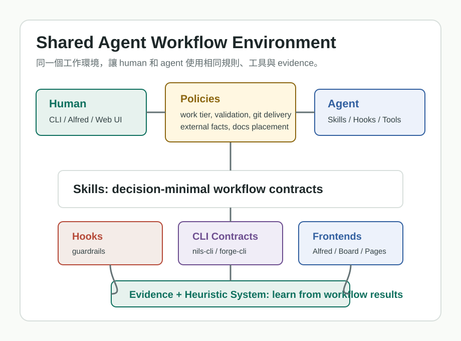
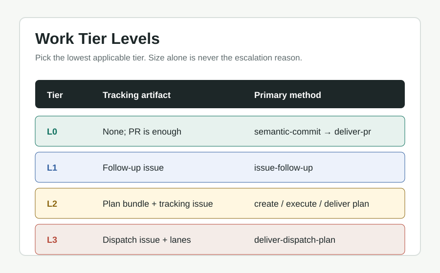
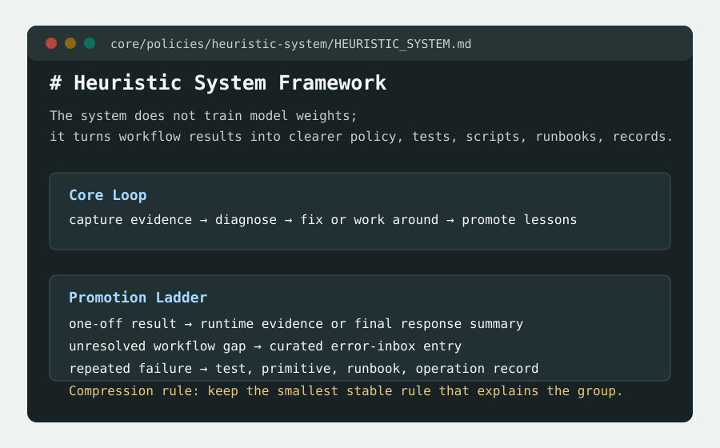
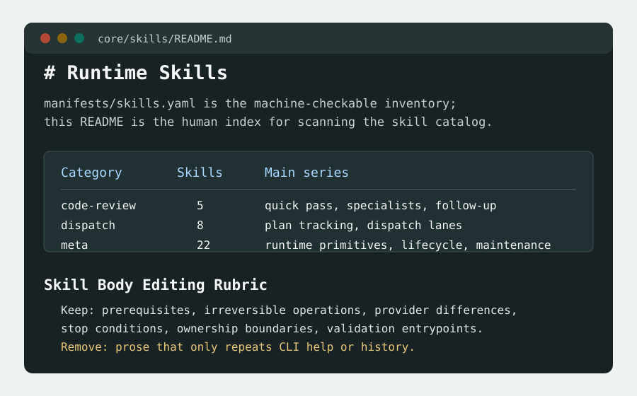
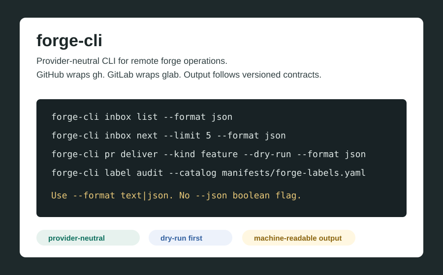
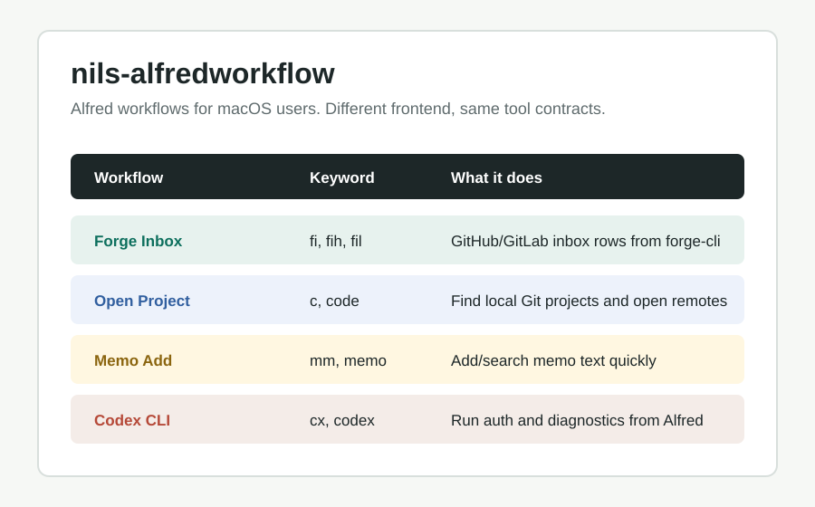
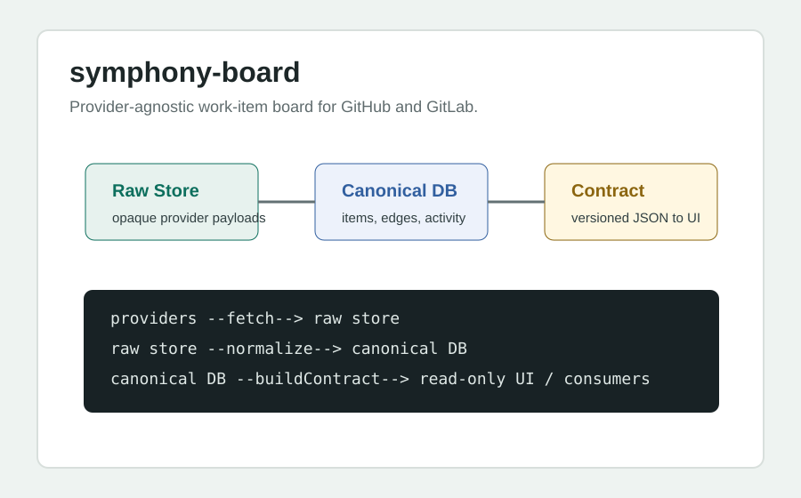

大家已經知道 agent 可以幫忙
問題不在「agent 能不能做」，而在 agent 做事時是否能遵守團隊 的交付邊界、驗證規則和工具合約。
AI workflow sharing / team skill system
這份教材不是介紹幾個 prompt 技巧，而是拆解一套工作方式：如何讓 human 和 agent 共用同一個工作環境，讓 skills、hooks、policies、 CLI contracts、work tier 和 heuristic system 一起形成可驗證、 可交接、可改進的工程流程。

Audience
目標聽眾是目前已經開始使用 skills 的 team members。他們下一步 不是「多寫幾個好用 prompt」，而是想做出團隊能共同維護、 共同使用、共同驗證的 skills 合集。
問題不在「agent 能不能做」，而在 agent 做事時是否能遵守團隊 的交付邊界、驗證規則和工具合約。
用我的 agent-runtime-kit、nils-cli、forge-cli、Alfred workflow 和 symphony-board 作為證據，抽出可複用的設計原則。
每個人可以帶走一份 checklist：什麼該寫進 skill，什麼該變成 CLI， 什麼應該靠 hooks/policies 收斂。
Talk Path
這不是工具 demo 的順序，而是聽眾理解系統的順序。先講問題與核心模型， 再用實際 repo 證明，最後回到 team 要怎麼採用。
直接讓 agent 使用 shell、`gh`、`glab` 和散落資料，短期快，長期難驗證、難交接、難團隊化。
Policies 決定邊界，skills 決定 workflow，hooks 擋住危險路徑，CLI contracts 提供穩定工具面，frontends 讓不同場景共用同一套能力。
Work Tier 讓 agent 自動判斷任務該用多少 tracking；Heuristic System 讓 agent 把失敗和反覆學到的規則沉澱成可維護的系統。
forge-cli、nils-alfredworkflow、symphony-board：同一個核心工具能力，讓 human 和 agent 在 CLI、快速入口、dashboard 中共用。
從一個常見 workflow 開始：定義 skill contract、補 CLI/validation、接 hooks、保留 evidence，最後壓縮成團隊可共用的 playbook。
Problem
一個人用 agent 很容易靠 tacit knowledge 補洞；團隊要共用時， 每個洞都會變成不穩定行為。教材的第一個重點，是把「個人習慣」 轉成「可被 agent 和人共同執行的環境」。
Core Model
這份教材的主軸不是每個 repo 的功能，而是這個分層：哪些東西是 judgment，哪些東西是 deterministic primitives，哪些東西只是不同場景的入口。
agent-runtime-kit 是 shared runtime source：skills、hooks、policies、targets、manifests。
nils-cli 承接 deterministic command contracts，避免 skill prose 自己處理 fragile mechanics。
SUPPORT_MATRIX 說明 Codex / Claude 目前各讀哪些 surface、如何安裝、如何驗證。
3 Takeaways
Team skill 應該是工作單元：它要說明何時用、前置條件、輸入輸出、 failure modes、驗證和 handoff。好的 skill 會降低判斷成本， 而不是把所有經驗塞成長文。
agent 能呼叫 CLI 不代表工作流可靠。先把 provider 差異、dry-run、 JSON envelope、label validation、merge gate 收斂成 CLI contract， 再讓 skills 使用。
Work Tier 讓 agent 自主選 tracking level；Heuristic System 讓 agent 把重要失敗變成 retained learning。這是從「一次任務」 走向「長期系統」的關鍵。
Autonomous Decision Layer
Work Tier 是這套工作流中很值得分享的部分，因為它不是工具命令， 而是 agent 在開始工作前應該自主做的判斷：這件事是直接做， 還是需要 issue、plan tracking、甚至 dispatch lanes？

L0：這是直接交付的修改，PR 足以承載記錄，我會直接做並驗證。
L1：這需要 durable timeline 或 root-cause investigation，建議先開 follow-up issue。
L2：這是多步驟且需要 frozen plan / execution state 的工作，建議開 plan tracking issue。
L3：這需要多個獨立 lanes 或 subagents，建議走 dispatch plan。Learning Loop
如果 Work Tier 是任務開始前的自主判斷，Heuristic System 就是任務結束後的 自主學習。它不訓練模型權重，而是把具體 workflow failure 轉成更好的 skill policy、validation、script、test、runbook 或 retained operation record。

Skills
對團隊來說，skill 的價值不是「幫 agent 多背一段指令」。 它應該把資深工程師的工作判斷切成可交接、可驗證、可演進的 workflow contract。

Hooks and Policies
Policies 是「應該怎麼做」；hooks 是「真的不要讓錯的路徑悄悄發生」。 團隊做 agent skills 時，最危險的是只把規則寫進文字，卻沒有執行時的檢查。
像 `agent-docs` 這類 preflight 讓 agent 在寫之前拿到 repo 宣告的 required docs 與 validation contract。
例如 direct `git commit`、direct mutating worktree command、未經 workflow 的 provider 操作。
如果改了 code 卻沒跑 declared validation，finish-line gate 應該擋住草率收尾。
Case Study
`forge-cli` 是最容易讓團隊理解的案例：底層仍然可以使用 `gh` 和 `glab`， 但上層暴露的是 provider-neutral、可 dry-run、可檢查、可被 agent 和 human 共用的 workflow contract。

forge-cli inbox list --item-type pr --format json
forge-cli pr deliver --kind feature --dry-run --format json
forge-cli label audit --catalog manifests/forge-labels.yaml --format jsonSame Tool, Many Frontends
這是整場分享最容易打到聽眾的畫面：CLI 不是只給 agent，也不是只給人。 它是穩定的能力層；Alfred、web dashboard、agent skills 都只是不同場景的入口。

macOS 快速入口，像 Forge Inbox 可以直接消費 `forge-cli inbox`。

把 provider work items 同步成 local store、contract 和 read-only UI。
對 agent 來說，skills 不必知道 UI 細節。它們只要知道何時使用哪個 CLI contract、如何驗證、何時 stop 或 escalate。
Team Adoption
不要一開始就複製整套 agent-runtime-kit。先用最小閉環建立團隊肌肉： 一個 workflow、一個 skill、一個 validation、一個 evidence path。
挑一個團隊常做、常卡、常需要資深工程師判斷的工作，例如 PR delivery、issue triage、release、incident note。
先寫何時用、輸入、輸出、failure modes、stop conditions。不要急著把所有 SOP 都放進去。
如果 skill 開始需要 parse provider output、做多步 mutation、產 JSON，就不要再靠 prompt prose，應該抽成 deterministic command。
讓重要規則可以被檢查：dry-run、schema、golden、smoke、finish-line gate。hooks 是 guardrail，不是政策替代品。
用 heuristic system 的精神處理 friction：不是什麼都記，而是把重要或反覆出現的問題變成更好的 contract。
Section Visual Plan
目前先全部放上，驗收後再刪。這些圖的目的不是裝飾，而是讓聽眾能 將抽象方法對應到實際 repo 和可操作流程。
用在 core model、hooks、heuristic loop。說明從 prompt 到 validation、從 failure 到 retained rule 的流動。
用在 policies / skills / hooks / CLI / UI。讓聽眾知道每一層的責任，不把所有事情塞進 skill。
用在 forge-cli、Alfred、symphony-board。說明同一個工具能力如何服務不同場景。
用在每個核心概念旁邊。截圖不是證明 repo 很大，而是讓 team member 可以馬上點進去看源頭。
Links
這些連結是教材的 evidence layer。分享時可以直接點開，讓聽眾看到實際 source。